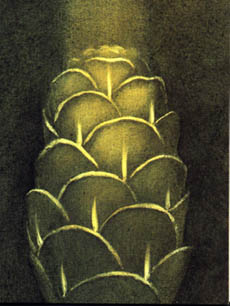

Pastýø mluvil velmi málo. U osamìle ¾ijících lidí to bývá obvyklé. Ale bylo vidìt, ¾e je sebejistý, plný dùvìry. V takovém kraji, postrádajícím naprosto v¹echno, to bylo zvlá¹tní. Nebydlel v nìjaké chatrèi, ale v opravdovém kamenném domì. Bylo dobøe vidìt, jak vlastníma rukama dùm opravil. Kdy¾ sem pøi¹el, byl dùm jen zøícenina. Nyní mìl zase dùkladnou støechu a voda jí nikde neprotékala. Kdy¾ ji vítr bièoval, bil do ta¹ek na støe¹e jako moøské vlny bijí v bouøi do bøehù.
Domácnost mìl v poøádku, nádobí bylo umyté, podlaha zametená, pu¹ka vyèi¹tìná a na ohni se vaøila voda. V é chvíli jsem si v¹iml, ¾e je pastýø èerstvì oholen. V¹echny knoflíky mìl pevnì pøi¹ité. ©aty mìl tak peèlivì vyspravené, ¾e správky nebylo vidìt.

Rozdìlil se semnou o polévku. Ale kdy¾ jsem mu potom nabídl pytlík s tabákem, øekl mi, ¾e nekouøí. Jeho pes byl stejnì mlèenlivý jako on. Byl pøátelský, ale nijak neloudil o mou pøízeò.
Hned jsme se dohodli, ¾e tam pøenocuji. Do nejbli¾¹í vesnice bylo víc ne¾ pùldruhého dne chùze. A mimoto jsem znal velice dobøe ráz osamocených vesnic ve zdej¹ím kraji. Ètyøi nebo pìt je jich roztrou¹eno na úboèích kopcù, jedna daleko od druhé, obklopeny svìtlým dubovým mlázím. A jsou a¾ na konci sjízdných cest.
Bydlí tam døevorubci a pálí døevìné uhlí. ®ivot je tam tì¾ký. Rodiny ¾ijí natìsnané jedna k druhé. Podnebí je neobyèejnì drsné, v létì i v zimì. Ta odlouèenost obyvatele vydra¾ïuje k sobectví. Nerozumná cti¾ádost se vybièovává v neustálou touhu uniknout odtud.
Mu¾i jezdí do mìsta s náklady uhlí a potom se zase vracejí. Neustálé støídání nadìje a zklamání nièí i ty nejspolehlivìj¹í vlastnosti. ®eny jsou plné zá¹tí. Konkuruje se ve v¹em. Stejnì tak v prodeji uhlí jako v získání místa v lavici v kostele. Navzájem se pøekonávají v cnostech, ale soupeøí i v neøestech. V¹ude se neustále potýká cnost a neøest. A také vítr nepøestává drá¾dit nervy. Dochází pøímo k epidemiím sebevra¾d a mnoho je i pøípadù ¹ílenství, témìø v¾dycky konèících vra¾dou.
Pastýø nekouøil, ale ¹el pro pytlík a vysypal na stùl spoustu ¾aludù. Kouøil jsem dýmku a nabídl jsem se, ¾e mu budu pomáhat. Odpovìdìl, ¾e to je jeho zále¾itost. A skuteènì: kdy¾ jsem vidìl, jak peèlivì to dìlá nenaléhal jsem. To byl ná¹ celý rozhovor. Kdy¾ dal stranou hromadu dobrých a dost velkých ¾aludù, odpoèítal hromádky po deseti. Vyøadil je¹tì malé ¾aludy nebo ty, které byly trochu rozpuklé. Prohlí¾el je toti¾ velice dùkladnì. A jakmile mìl pøed sebou sto bezvadných ¾aludù, nechal toho a ¹li jsme spát.